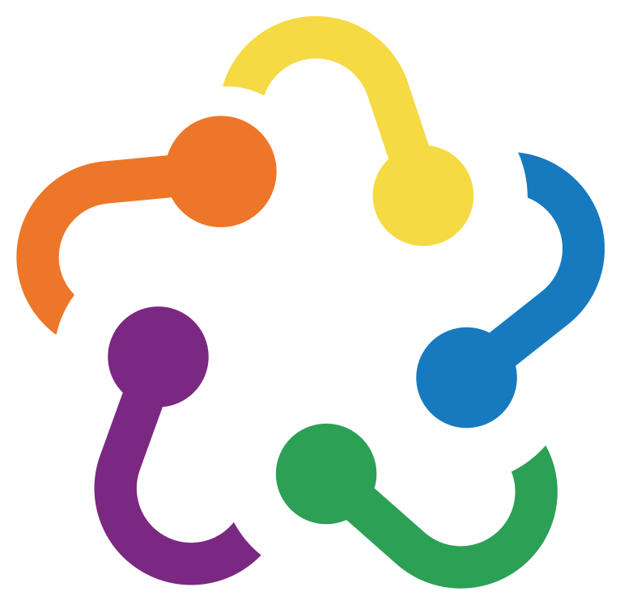
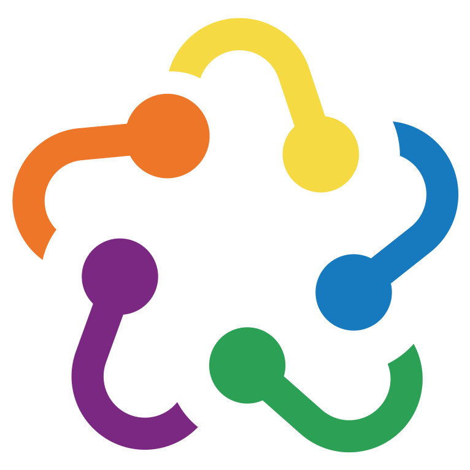
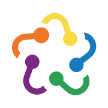
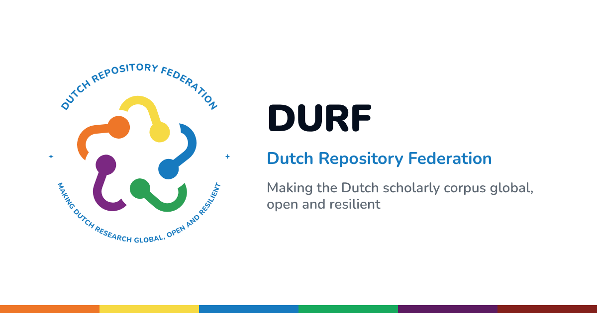

Gebruik
Zet dit in de head van elke pagina, in deze volgorde. Alles komt van de site van het design system zelf, ook oat. Laad durf-nav.js zonder defer, dan wordt het thema gezet voordat er iets getekend is.
<link rel="stylesheet" href="https://durf-project.github.io/durf-design-system/lib/oat.min.css"> <link rel="stylesheet" href="https://durf-project.github.io/durf-design-system/durf.css"> <script src="https://durf-project.github.io/durf-design-system/durf-nav.js"></script> <script src="https://durf-project.github.io/durf-design-system/lib/oat.min.js" defer></script>
Voor een pagina die uit Markdown-bestanden wordt opgebouwd komen er twee regels bij (zie Markdown-sites):
<link rel="stylesheet" href="https://durf-project.github.io/durf-design-system/durf-site.css"> <script src="https://durf-project.github.io/durf-design-system/durf-site.js" defer></script>
Pagina's die oat nog van jsDelivr laden (cdn.jsdelivr.net/npm/@knadh/oat@1.0.0/oat.min.css) blijven werken: het is precies hetzelfde bestand. Optioneel kies je een accent per site met <html data-accent="theme-2">.
Logo
Het logo is volledig vector, zonder rasterbeelden erin. Het beeldmerk bestaat uit vijf puzzelstukken; het ronde logo zet de ringtekst eromheen, als lijnen (Nunito ExtraBold), zodat het overal hetzelfde oogt. Gebruik de bestanden rechtstreeks van deze site.
assets/durf-logo.svgrond logo met ringtekst

assets/durf-mark.svgbeeldmerk, origineel (met C2PA)

assets/favicon.svgvierkant, ook in de topbalk

favicon-32.png, apple-touch-icon.png, durf-mark-512.png
assets/durf-og.png1200 × 630, voor og:image
<link rel="icon" type="image/svg+xml" href="https://durf-project.github.io/durf-design-system/assets/favicon.svg"> <link rel="apple-touch-icon" href="https://durf-project.github.io/durf-design-system/assets/apple-touch-icon.png"> <meta property="og:image" content="https://durf-project.github.io/durf-design-system/assets/durf-og.png">
Heeft een pagina zelf geen favicon, dan zet durf-nav.js die van het design system.
Kleur
Oat-tokens als --primary, --border en --card zijn opnieuw ingekleurd, zodat alle oat-componenten het DURF-palet volgen en licht en donker automatisch werken via light-dark(). Gebruik in pagina's alleen tokens, nooit losse hex-waarden.
De zes themakleuren
De kleuren komen uit de DURF-roadmap. Per thema zijn er vier tokens: de merkkleur --durf-theme-N, een leesbare tekstkleur -ink, een zachte achtergrond -tint en de tekstkleur op een vol vlak -on. Met data-theme-n="N" op een element krijg je ze als --theme-color, --theme-ink, --theme-tint en --theme-on. Namen, leads en partners staan in durf-themes.json en in window.DURF.themes; deze kaarten worden daaruit opgebouwd.
Merkkleuren
Accent per site of thema
Zet data-accent op het html-element: een kleurnaam (blue, orange, yellow, green, purple, red) of een themanummer (theme-1 tot en met theme-6). Tekst op de accentkleur houdt voldoende contrast, ook bij geel (in licht de donkere oker). Probeer het hier:
Status en data
Typografie
Nunito (800 en 900) voor koppen en kerncijfers, Source Sans 3 voor lopende tekst. Leesbreedte maximaal 46rem (--reading-width).
Kop 1, Nunito 800
Kop 2, Nunito 800
Kop 3, Nunito 800
Lopende tekst in Source Sans 3 op 16 pixels met regelhoogte 1,6. Een link krijgt de accentkleur en blijft onderstreept bij hover.
Componenten
Knoppen en tags
Kerncijfers
Een waarde die nog niet bekend is, toon je als onbekend met class="durf-kpi is-unknown": gedempt en met een stippellijn, zodat niemand het voor een meting aanziet.
Callout en themablok
Proof of concept. De tabbladen Personen en Organisaties tonen nepdata.
Plain-http endpoints zijn niet bereikbaar vanuit de controle-omgeving.
3. Een kop met themastip
Tabel
| Veld | Gevuld | Geldig | Status |
|---|---|---|---|
| DOI | 52% | 98% | Gemeten |
| Handle | 37% | 99% | Gemeten |
| ORCID | n.v.t. | n.v.t. | Niet in de data |
Sectiecomponenten (durf-site.css)
Deze klassen werken met de hand in HTML en worden ook door durf-site.js gemaakt. Een paar voorbeelden, op ware grootte in de voorbeeldsite.
- 6thema's
- 4 jaar1 juni 2026 tot 31 mei 2030
- Unknowndeelnemende repositoriesNot yet measured
- Jun 2026Start van het project
- 2026–2030Zes thema's werken samen
- May 2030Einde van het project
Band
Een oproep in een themakleur
Zonder data-theme-n neemt de band het accent van de site.
Markdown-sites
durf-site.js bouwt een pagina op uit Markdown-bestanden met front matter, zoals de PID2Portal-pagina. Het leest content/sections.json en de bestanden in content/, relatief aan de pagina. Elke sectie kiest een layout: hero, stats, statement, cards, features, timeline, media, band, prose of accordion. De afspraken staan in de README; de voorbeeldsite laat ze allemaal zien.
--- layout: cards # hero | stats | statement | cards | features | timeline | media | band | prose | accordion id: themes # anker, voor #themes nav: Themes # label in de sectienavigatie (weglaten = niet tonen) eyebrow: Six themes # klein label boven de kop theme: 3 # optioneel: sectie in themakleur 3 --- ## One project, six themes ### Full Text Capture theme: 3 tags: Draft Led by the University of Amsterdam.
JavaScript
durf-nav.js zet window.DURF met version, project, themes (nummer, naam, korte naam, kleur, token, lead, partners), theme(n) en assets (URL's van logo, beeldmerk, favicon en deelafbeelding). Dezelfde gegevens staan in durf-themes.json.
var t = DURF.theme(2); // { n: 2, name: "Metadata Quality Improvement", short: "Metadata", colour: "#F6DA44", ... }
el.setAttribute('data-theme-n', t.n); // kleur via tokens, niet via t.colour